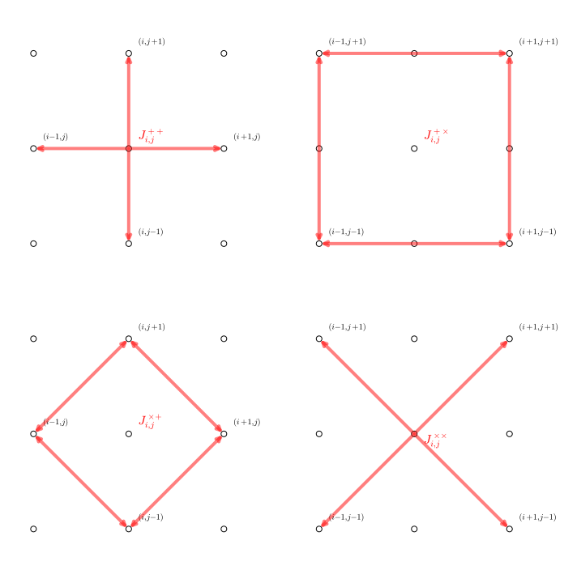

I am a NASA Postdoctoral Program fellow at Jet Propulsion Laboratory working on the Juno mission. I received my doctoral degree in Planetary Science at California Institute of Technology. I'm generally interested in all kinds of physics related to fluid motions. My Ph.D. thesis is about moist convection and atmospheric dynamics on giant planets.
I love outdoor activities such as hiking and cycling. I enjoy the sunshine in the Southern California.
Education
California Institute of Technology, Sep 2011 – May 2016
Ph.D., Geological and Planetary Science
minor in Evironmental Science and Engineering
Advisor: Andrew Ingersoll
Peking University, Sep 2007 – Jun 2011
B.Sc., School of Physics
Advisor: Yongyun Hu
Research
I learn a subject by doing research in its field. In the following, you will find projects across multiple disciplines including fluid dynamics, photochemistry, atmospheric radiation and spectral inversion. These topics seem farraginous at a first glance, but all of them are germane to the understanding of atmospheric circulation on a planet, which is the theme of my research.
[{{k}}] {{w.title}}
{{w.summary}}
Read more news articles at: [{{n.name}}]
{{w.journal.name}}
{{w.journal.name}}, doi:{{w.journal.doi}}
{{w.journal.name}}, doi:{{w.journal.doi}}, {{w.journal.etc}}
∙ to be submitted ∙ submitted on {{w.submitted | date}} ∙ accepted on {{w.accepted | date}} ∙ published on {{w.published | date}}
Code
I develop numerical models, especially dynamic cores, to aid my research. Here are some snippets of my numerical arsenals.
Linear Rossby wave propagation
Motion of a nonlinear vortex on a beta plan
Galileo (1610?): "I had less difficulty in the discovery of the motions of the heavenly bodies, in spite of their astonishing distances, than in the investigation of the movement of water before my very eyes."
Perhaps, the most fundamental mechanism underlying the complicated motion of fluids is linear waves. Using the deformation radius as the length scale and the Coriolis parameter as the time scale, the non-dimensionalized quasi-geostrophic potential vorticity (QGPV) equation becomes: $$\frac{\partial}{\partial t}(\nabla^2\psi-\psi)+J(\psi,\nabla^2\psi)+\beta\frac{\partial\psi}{\partial x}=0$$ The second term $J(\psi,\nabla^2\psi)=\frac{\partial\psi}{\partial x}\frac{\partial\nabla^2\psi}{\partial y}-\frac{\partial\psi}{\partial y}\frac{\partial\nabla^2\psi}{\partial x}$ is nonlinear. If only small amplitude oscillations are considered, the equation reduces to: $$\frac{\partial}{\partial t}(\nabla^2\psi-\psi)+\beta\frac{\partial\psi}{\partial x}=0$$ This equation is linear and can be solved analytically or numerically. This solution is called a Rossby wave. The following animation shows the wave triggered by a mass bump at the water surface.
Leonardo (1500?): "... the small eddies are almost numberless, and large things are rotated by large eddies and not by small ones, and small things are turned by both small eddies and large ..."
Linear waves do not transport water mass. The water mass merely oscillates up and down at its original position. But, a nonlinear vortex carries water mass with it when it translates. A specially numerical treatment is needed to integrate the nonlinear QGPV equation. Basically, there are 4 ways to numerically calculate the nonlinear term $J(\psi,\nabla\psi)$ according to the seminal paper by Akio Arakawa. They are named $J_{i,j}^{++}, J_{i,j}^{+\times}, J_{i,j}^{\times+}, J_{i,j}^{\times\times}$, as illustrated below.  Only one combination conserves both kinetic energy and enstrophy (square vorticity), which is called "Arakawa Jacobian": $$J_{i,j}=\frac{1}{3}(J_{i,j}^{++}+J_{i,j}^{+\times}+J_{i,j}^{\times+})$$ The following animation shows the tracer field carried away by the nonlinear vortex.
Teaching
California Institute of Technology, Sep 2011 - Dec 2015
{{t.semester}} - {{t.code}}, {{t.name}} ({{t.role}})
Contact
Division of Geological and Planetary Science
South Mudd, MC:150-21
Email: cli [at] gps [dot] caltech [dot] edu